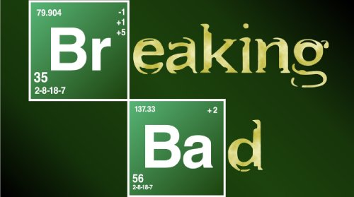
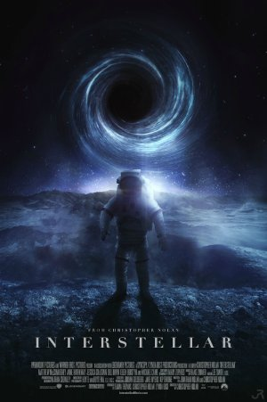

HORROR
Horror is a genre of fiction or film that is designed to scare, unsettle, or shock its
audience. Horror
often involves elements of supernatural, violent, and macabre events, as well as suspense, tension, and
anxiety. The goal of horror is to elicit strong emotions such as fear, terror, and dread in the
audience, often through the use of disturbing images, suspenseful music, and frightening characters or
scenarios. Horror can take many forms, from traditional ghost stories and monster movies to
psychological thrillers and apocalyptic dramas.
| Director: |
Jordan Peele |
| Writer: |
Jordan Peele |
| Stars: |
Daniel KaluuyaAllison WilliamsBradley Whitford |
| Download from here: |
|
Storyline
Chris and his girlfriend Rose go upstate to visit her parents for the weekend. At first, Chris reads
the family's overly accommodating behavior as nervous attempts to deal with their daughter's
interracial relationship, but as the weekend progresses, a series of increasingly disturbing
discoveries lead him to a truth that he never could have imagined.—Anonymous
SUSPENSFULL
Suspenseful films are movies that generate a feeling of uncertainty or tension in
the audience by using various techniques such as dramatic music, unexpected twists, and visual effects.
These films are designed to keep the audience on the edge of their seat, wondering what will happen
next, and increase the level of excitement and anxiety throughout the movie.
| Director: |
Martin Scorsese |
| Writers: |
Laeta Kalogridis (screenplay) Dennis Lehane (novel) |
| Stars: |
Leonardo DiCaprio Emily Mortimer Mark Ruffalo |
| Download from here: |
|
Storyline
In 1954, up-and-coming U.S. marshal Teddy Daniels is assigned to investigate the disappearance of a
patient from Boston's Shutter Island Ashecliffe Hospital. He's been pushing for an assignment on the
island for personal reasons, but before long he thinks he's been brought there as part of a twisted
plot by hospital doctors whose radical treatments range from unethical to illegal to downright
sinister. Teddy's shrewd investigating skills soon provide a promising lead, but the hospital
refuses him access to records he suspects would break the case wide open. As a hurricane cuts off
communication with the mainland, more dangerous criminals "escape" in the confusion, and the
puzzling, improbable clues multiply, Teddy begins to doubt everything - his memory, his partner,
even his own sanity.—alfiehitchie
SERIES
A drama series is a type of television or web series that focuses on intense emotional relationships and
personal struggles, often involving complex characters and intricate plotlines. Drama series often cover
serious topics such as politics, crime, relationships, and social issues and aim to entertain as well as
provoke thought and stimulate discussion. Examples of popular drama series include "Breaking Bad" etc.

| Creator: |
Vince Gilligan |
| Stars: |
Bryan Cranston Aaron Paul Anna Gunn |
| Download from here: |
|
Storyline
Walter H. White is a chemistry genius, but works as a chemistry teacher in an Albequerque, New
Mexico high school. His life drastically changes when he's diagnosed with stage III terminal lung
cancer, and given a short amount of time left to live: a mere matter of months. To ensure his
handicapped son and his pregnant wife have a financial future, Walt uses his chemistry background to
create and sell the world's finest crystal methamphetamine. To sell his signature "blue meth," he
teams up with Jesse Pinkman, a former student of his. The meth makes them very rich very quickly,
but it attracts the attention of his DEA brother in law Hank. As Walt and Jesse's status in the drug
world escalates, Walt becomes a dangerous criminal and Jesse becomes a hot-headed salesman. Hank is
always hot on his tail, and it forces Walt to come up with new ways to cover his tracks.—halo1k,
jackenyon
SCI-FI
Science fiction is a genre of speculative fiction that deals with imaginative and futuristic concepts,
such as advanced science and technology, space exploration, time travel, parallel universes, and
extraterrestrial life, often based on scientific, social, or technological innovations. Notable science
fiction works include "The War of the Worlds" by H.G. Wells, "Brave New World" by Aldous Huxley, "1984"
by George Orwell, "Dune" by Frank Herbert, and "The Hitchhiker's Guide to the Galaxy" by Douglas Adams.

| Director: |
Christophar Nolan |
| Writers: |
Jonathan Nolan Christopher Nolan |
| Stars: |
Matthew McConaughey Anne Hathaway Jessica Chastain |
| Download from here: |
|
Storyline
Earth's future has been riddled by disasters, famines, and droughts. There is only one way to ensure
mankind's survival: Interstellar travel. A newly discovered wormhole in the far reaches of our solar
system allows a team of astronauts to go where no man has gone before, a planet that may have the
right environment to sustain human life.—ahmetkozan
MOVIES:
A movie or film is a type of visual art that uses images and sounds to tell stories or teach people
something. Most people watch movies to entertain themselves or to have fun. Some movies can make people
laugh, but other movies can make them cry, or make them feel afraid.
Most movies are made so they can be watched at home or on a movie screen at movie theaters. Movies are
shown in movie theaters a few weeks or months after or before the movie is released. Movies can be
marketed using media. Movies are shown on pay television or cable television, or are sold or rented on
DVD disks or videocassette tapes, so that people can watch the movies at home. Movies can also be
downloaded or streamed.